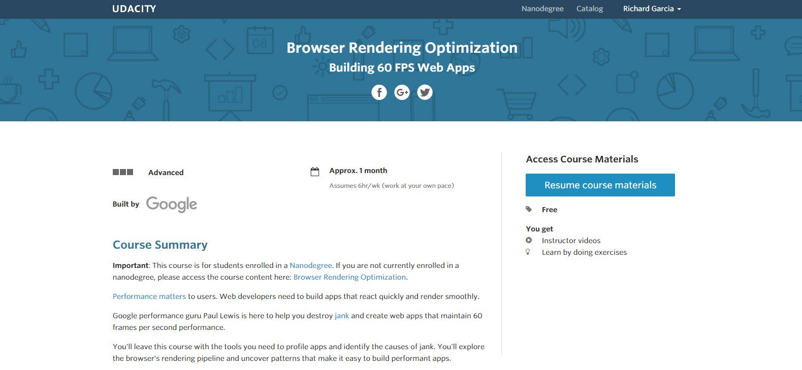

Ricky Garcia
Builder, sharer, life-long learner
Ricky Garcia
Builder, sharer, life-long learner
Performance matters to users. Web developers need to build apps that react quickly and render smoothly. Google performance guru Paul Lewis is here to help you destroy jank and create web apps that maintain 60 frames per second performance. You'll leave this course with the tools you need to profile apps and identify the causes of jank. You'll explore the browser's rendering pipeline and uncover patterns that make it easy to build performant apps.
